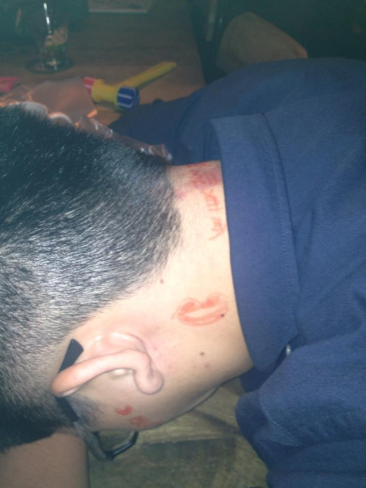

男：我最近時不時的想到銅元素。
女：為什麼？ 男：因為想 C u。男：妳知道金城武最喜歡碘跟銅嗎？
女：為什麼？ 男：因為ICu。
男: 我喜歡海膽 女: 為什麼? 男: 因為是u n i

男: 你屬什麼? 女: 我屬虎
女: 那你呢，你屬什麼? 男: 屬於妳
女: 這家餐廳的Menu上有甚麼?
男: Me n u
男: 你走左邊 女: 為什麼?
男: 因為這樣我才是妳的 Mr.Right

男：我想加妳FB 女：為什麼？
男：因為我要偷你的菜男：欸等等，我發現我再也不用偷菜了 女：為什麼？ 男：因為妳就是我的菜